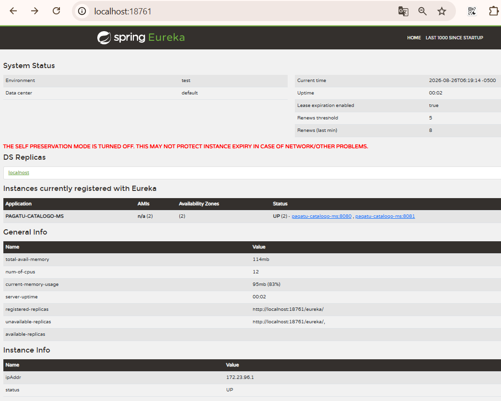

S3 - Registro, Descubrimiento y Ejecución Concurrente de Servicios¶
Por: Angel Sullon Macalupu @asullom - 2026
1. Introducción¶
Tiempo: 20 min.
1.1 Presentación de la sesión¶
Hasta ahora, cualquier cliente que necesitaba llamar a un microservicio tenía que conocer de antemano su host y su puerto exactos — una URL fija, escrita a mano en la configuración. Eso funciona con un servicio y una instancia, pero deja de funcionar en cuanto aparece una segunda instancia del mismo servicio, o un servicio nuevo que nadie anticipó. Esta sesión resuelve exactamente eso: un servidor de registro donde cada microservicio anuncia su propia existencia al arrancar, y cualquier otro componente lo encuentra por nombre lógico, sin conocer su dirección de antemano — incluso cuando hay varias instancias corriendo a la vez.
1.2 Índice¶
- Registro de servicios.
- El patrón Service Registry en la arquitectura de microservicios.
- Descubrimiento de servicios.
- Ejecución concurrente de servicios.
- Observabilidad de instancias registradas.
1.3 Propósito de aprendizaje¶
Al concluir la clase, estarás en condiciones de:
- Construir e implementar un servidor de registro y descubrimiento de servicios, conectar un microservicio como cliente, y verificar que sus múltiples instancias activas quedan localizables por nombre lógico en el registro — sin que ningún componente que las consulte (otro cliente de Eureka, o una herramienta de observabilidad) necesite una lista de direcciones escrita a mano.
1.4 Producto de sesión¶
pagatu-eureka operativo en infra/pagatu-eureka, con pagatu-catalogo-ms registrado como cliente Eureka y ejecutando dos instancias simultáneas (puerto fijo 8080/8081, igual que desde S1), visibles por nombre lógico en el dashboard — sin que ningún componente que consulte el registro necesite memorizar en qué puerto responde cada una (quien prueba a mano, con PowerShell o Swagger, sigue usando el puerto exacto de cada instancia — 3.8, 3.9). De forma opcional (según los recursos de cómputo disponibles), también Prometheus y Loki en pie en obs, recolectando métricas y logs de esas mismas instancias — Prometheus las encuentra preguntándole a pagatu-eureka, no por una lista de direcciones escrita a mano.
1.5 Metodología¶
Tabla 1. Metodología de la sesión
| Actividades a Realizar en el Periodo | Orientaciones generales (Orientaciones Metodológicas) | Material de estudio recomendado |
|---|---|---|
| Revisión previa individual | Confirmar que pagatu-config y pagatu-catalogo-ms (S2) siguen arrancando en DEV. Trabajo individual, antes de clase; identificar qué pasaría si pagatu-catalogo-ms necesitara dos instancias corriendo a la vez hoy mismo, con el puerto 8080 fijo que usa desde S1. |
Evidencia individual de S2, pagatu-catalogo-ms-dev.yml actual. |
| Clase presencial | Construcción guiada de pagatu-eureka y conexión de pagatu-catalogo-ms como cliente, con dos instancias verificadas en el dashboard. Trabajo individual, siguiendo al docente paso a paso; consulta inmediata ante un servicio que no aparece registrado. Quien cuente con los recursos de cómputo puede continuar con Prometheus y Loki (3.10-3.14, opcional) y con producción local (3.15, opcional). |
Pasos 3.1 a 3.9 de esta guía (3.10-3.15 son opcionales). |
| Evaluación formativa | Revisión en clase de pagatu-eureka respondiendo por HTTP y de dos instancias de pagatu-catalogo-ms visibles en el dashboard. La evidencia se completa y sustenta de forma individual, fuera del aula, según los criterios mínimos de la sección 4.4. |
Indicaciones de entrega (4.3), rúbrica de evaluación (4.6). |
1.6 Motivación de la sesión¶
1.6.1 Caso: el puerto que ya no alcanza¶
pagatu-catalogo-ms arranca hoy en el puerto 8080, fijo — S1 (3.4.1) ya mostró que una segunda instancia necesita que alguien le pase --server.port=8081 a mano, y que cualquier cliente que quiera repartir tráfico entre ambas tiene que conocer los dos puertos de antemano. Eso todavía es manejable con dos instancias de un solo servicio. El problema real aparece cuando el sistema crece: varios microservicios, cada uno con varias instancias, y nadie escribiendo a mano una lista de puertos que cambia cada vez que algo se reinicia, se cae o se agrega.
La solución no es "recordar mejor" las direcciones — es que ningún cliente necesite conocerlas: cada instancia se anuncia sola al arrancar, en un lugar único, con un nombre lógico (pagatu-catalogo-ms, no localhost:8080); quien la necesite pregunta por ese nombre, no por una dirección fija.
Preguntas de análisis
Activación de conocimientos previos
- En S1 (3.4.1), la segunda instancia de
pagatu-catalogo-msnecesitó un puerto distinto pasado a mano (--server.port=8081). ¿Qué tendría que hacer un cliente para repartir peticiones entre esa instancia y la original, hoy, sin ningún componente nuevo?
Comprensión de registro y descubrimiento
- ¿Qué diferencia hay entre conocer la dirección de un servicio y conocer su nombre lógico?
- Si dos instancias del mismo microservicio ya corren en puertos distintos (8080 y 8081), ¿qué falta para que un cliente no tenga que memorizar cuál es cuál?
1.7 Ubicación en el curso¶
- Unidad: U1 - Sistema distribuido base orientado a producción.
- Producto de unidad: sistema distribuido base funcional, configurable y preparado para múltiples instancias.
- Producto del curso: sistema distribuido de microservicios end-to-end, configurable, escalable, seguro, resiliente, consistente, observable, integrado con frontend y defendido técnicamente.
- Avance del producto en esta sesión: registro y descubrimiento de servicios operativo, con
pagatu-catalogo-msejecutando múltiples instancias localizables por nombre lógico.
Figura 1. Roadmap del producto de la unidad
flowchart TB
Cliente["Cliente de prueba - PowerShell / bash / Swagger"]
Gateway["Gateway - punto único de acceso - balanceo de carga"]
Catalogo["pagatu-catalogo-ms - construido en S1 - REST + BD + health"]
Orden["pagatu-orden-ms - trabajo aplicado"]
Eureka["Registro de servicios - pagatu-eureka - HOY"]
Config["Servidor de configuración - pagatu-config - construido en S2"]
Repo[("Repositorio de configuración - config-repo")]
Cliente --> Gateway
Gateway --> Catalogo
Gateway --> Orden
Gateway -. descubre servicios .-> Eureka
Catalogo -. registra instancia .-> Eureka
Orden -. registra instancia .-> Eureka
Catalogo -. carga configuración .-> Config
Orden -. carga configuración .-> Config
Eureka -. carga configuración .-> Config
Config --> Repo
classDef done fill:#e8f5e9,stroke:#2e7d32,color:#111;
classDef today fill:#ffe08a,stroke:#9a6b00,stroke-width:2px,color:#111;
class Catalogo,Config done;
class Eureka today;Hoy se construye pagatu-eureka y se conecta pagatu-catalogo-ms como cliente. pagatu-orden-ms (todavía sin Config Client ni Eureka Client) se conecta como trabajo autónomo (sección 4) — el mismo patrón, aplicado sobre el segundo microservicio.
2. Explica¶
Tiempo: 25 min.
2.1 Arquitectura de la sesión¶
Figura 2. Registro y descubrimiento en DEV
flowchart TB
Cliente["Cliente<br/>PowerShell / bash / navegador"]
Eureka["Eureka Server<br/>localhost:18761"]
I1["pagatu-catalogo-ms<br/>instancia 1, puerto 8080"]
I2["pagatu-catalogo-ms<br/>instancia 2, puerto 8081"]
Config["Config Server<br/>localhost:18888"]
Cliente -->|"GET localhost:18761"| Eureka
Cliente -->|"GET localhost:8080/api/v1/categorias"| I1
I1 -. "registra instancia<br/>http://localhost:18761/eureka" .-> Eureka
I2 -. "registra instancia<br/>http://localhost:18761/eureka" .-> Eureka
I1 -. "spring.config.import<br/>http://localhost:18888" .-> Config
I2 -. "spring.config.import<br/>http://localhost:18888" .-> Config
Eureka -. "spring.config.import<br/>http://localhost:18888" .-> ConfigEn DEV, los componentes principales corren con Maven en el host:
Config Server: http://localhost:18888
Eureka Server: http://localhost:18761
Microservicios: puerto fijo por instancia (8080, 8081, ...)
Lectura del diagrama: fíjate que el Cliente hace dos llamadas de naturaleza distinta. La primera (GET localhost:18761) consulta el registro — ahí es donde Eureka resuelve el nombre lógico pagatu-catalogo-ms a una lista de direcciones reales, sin que nadie haya escrito esa lista a mano. La segunda (GET localhost:8080/api/v1/categorias) sigue siendo una llamada directa, con puerto exacto — quien prueba a mano (PowerShell, Swagger) no queda automáticamente libre de conocer el puerto; ese paso extra (resolver el nombre y elegir la instancia sin intervención humana) es trabajo del Gateway, en S4. Lo que sí cambia hoy es que cada instancia se anuncia sola al arrancar, y cualquier componente que consulte el registro puede encontrarla por nombre. La configuración de los tres componentes (incluido el propio pagatu-eureka) sigue viniendo de pagatu-config, exactamente como desde S2 — registro y configuración son dos preguntas distintas, a dos servidores distintos. Este diagrama es el mapa que guía el resto de la explicación: cada apartado siguiente desarrolla uno de sus componentes, en el mismo orden del Índice (1.2).
2.2 Registro de servicios¶
Registro de servicios: el componente (pagatu-eureka, un Eureka Server) donde cada microservicio anuncia su propia existencia al arrancar — nombre lógico, dirección real y un heartbeat (latido) periódico que confirma que la instancia sigue viva. Si una instancia deja de enviar heartbeat (latido) (se cayó, se apagó), Eureka la retira del registro después de un tiempo, sin que nadie tenga que notificarlo a mano. El nombre "descubrimiento" puede sugerir que Eureka sale a buscar servicios en la red — es al revés: cada instancia se registra por su cuenta, empujando la información hacia Eureka (self-registration); Eureka nunca busca nada, solo recibe.
2.3 El patrón Service Registry en la arquitectura de microservicios¶
Lo construido en 2.2 no es una solución aislada de pagatu — es la implementación de Service Registry (también llamado Service Discovery), uno de los patrones de arquitectura de microservicios más conocidos.
2.3.1 Qué es el patrón Service Registry¶
Según SACAViX System Design (2026), Service Registry es una base de datos centralizada que almacena las ubicaciones de red (IP, puerto) de todas las instancias de servicio, permitiendo que se encuentren dinámicamente sin configuración estática — exactamente lo que Eureka implementa para este curso, registrando y dando de baja instancias automáticamente, sin que nadie configure endpoints fijos a mano.
Problema que resuelve: en un sistema con varios microservicios, cada uno con varias instancias que pueden aparecer, moverse o desaparecer en cualquier momento, ningún cliente puede mantener a mano una lista actualizada de direcciones válidas. Codificar esas direcciones de forma fija hace que el sistema deje de tolerar cambios de escala sin intervención manual.
Contexto en el que aplica: sistemas distribuidos donde el número de instancias de un mismo servicio varía (por escalado, caídas o despliegues), y donde ningún cliente puede asumir una dirección fija de antemano.
Cómo funciona: cada instancia se registra a sí misma ante un servidor de registro al arrancar (self-registration, ya visto en 2.2) y renueva su registro periódicamente mediante heartbeat (latido). Quien necesita comunicarse con el servicio consulta al registro por su nombre lógico, en vez de guardar una dirección fija.
Figura 3. Registro, descubrimiento y conexión entre clientes de Eureka
flowchart TB
Registry["Service Registry<br/>(Eureka Server)"]
X["Service X<br/>(Eureka Client)"]
Y["Service Y<br/>(Eureka Client)"]
X -->|"1. Register"| Registry
Y -->|"1. Register"| Registry
Y -->|"2. Discover"| Registry
X <-->|"3. Connect"| YNota. Adaptado de Implementing Microservice Registry with Eureka, por D. Rajput, 2019, Dinesh on Java (https://dineshonjava.com/implementing-microservice-registry-with-eureka/).
Los tres pasos del diagrama son los mismos tres conceptos de esta sesión, en orden: 1. Register es 2.2 (registro de servicios); 2. Discover es 2.4 (descubrimiento de servicios); 3. Connect es lo que ya se ve en la Figura 2 — una vez que Service Y descubrió a Service X, ambos se conectan directamente, sin que Eureka intermedie en esa conexión.
Quién hace el discover, exactamente, es una decisión de diseño aparte — no forma parte del registro en sí (SACAViX System Design, 2026):
- Client-side discovery (lo que construye esta sesión): el propio cliente consulta a Eureka, recibe la lista de direcciones y elige una — el cliente necesita saber que Eureka existe y contiene la lógica de elegir.
- Server-side discovery (adelanto de S4): el cliente ni siquiera sabe que Eureka existe — llama siempre a un punto único (el Gateway), y es el Gateway quien consulta a Eureka y reenvía la petición a una instancia concreta.
Figura 4. Client-side vs. server-side discovery
flowchart TB
subgraph Hoy["Client-side discovery (esta sesión)"]
C1["Cliente"] -->|"1. pregunta a Eureka"| E1["Eureka"]
E1 -->|"2. devuelve direcciones"| C1
C1 -->|"3. elige una y llama directo"| S1["pagatu-catalogo-ms"]
end
subgraph Proximo["Server-side discovery (S4, Gateway)"]
C2["Cliente"] -->|"1. llama al Gateway<br/>sin conocer a Eureka"| G["Gateway"]
G -->|"2. pregunta a Eureka"| E2["Eureka"]
E2 -->|"3. devuelve direcciones"| G
G -->|"4. reenvía a una instancia"| S2["pagatu-catalogo-ms"]
end
Hoy ~~~ Proximo
classDef today fill:#ffe08a,stroke:#9a6b00,stroke-width:2px,color:#111;
class C1,E1,S1 today;La diferencia no es solo "quién pregunta" — es qué tanto sabe el cliente. Hoy, el cliente de Eureka (otro microservicio, o tú mismo probando en 3.8) necesita conocer a Eureka y decidir. En S4, el Gateway se vuelve ese único punto de contacto: el cliente externo llama siempre al mismo lugar, y ni siquiera se entera de que hay varias instancias ni de que existe un registro detrás — es la misma idea de 1.3 (quien prueba a mano sigue necesitando el puerto exacto hoy) llevada un paso más allá: con Gateway, ya ni el puerto de cada instancia hace falta conocerlo.
Casos de uso típicos:
- Servicios que escalan horizontalmente, con instancias que aparecen y desaparecen sin aviso previo.
- Entornos donde las direcciones de red no son estables (contenedores, orquestadores, nube).
- Un Gateway o balanceador que necesita repartir tráfico entre todas las instancias vivas de un servicio (adelanto de S4).
Trade-offs a considerar:
- El propio servidor de registro se vuelve un componente crítico: si no está disponible, ningún cliente nuevo puede descubrir instancias (aunque las ya conectadas suelen seguir funcionando con lo último que resolvieron).
- Hay una ventana de tiempo entre que una instancia se cae y el registro deja de anunciarla (mientras vence su último heartbeat [latido]).
Errores comunes al implementarlo:
- Reutilizar el mismo puerto en dos instancias que deben correr a la vez sin coordinarlas (el error que evita asignar puertos distintos a mano en 2.5/3.9).
- Asumir que una instancia que aparece en el registro sigue necesariamente viva en este instante exacto — el registro refleja el último heartbeat (latido) recibido, no el estado en tiempo real.
pagatu-eureka es la implementación concreta de este patrón para el curso; en la Figura 2 ya se ve funcionando junto al resto del sistema.
2.3.2 Registro y descubrimiento en producción local¶
Figura 5. Registro y descubrimiento en producción local
flowchart LR
Client["Cliente - PowerShell / bash"]
subgraph Docker["Docker Network: pagatu-prod-net"]
Eureka["pagatu-eureka - Eureka Server - 8761 interno"]
I1["pagatu-catalogo-ms - réplica 1"]
I2["pagatu-catalogo-ms - réplica 2"]
Config["pagatu-config - Config Server - 8888 interno"]
end
Client -->|"GET localhost:28761"| Eureka
I1 -. "registra instancia - http://pagatu-eureka:8761/eureka" .-> Eureka
I2 -. "registra instancia - http://pagatu-eureka:8761/eureka" .-> Eureka
I1 -. "spring.config.import - http://pagatu-config:8888" .-> Config
I2 -. "spring.config.import - http://pagatu-config:8888" .-> Config
Eureka -. "spring.config.import - http://pagatu-config:8888" .-> Config
classDef server fill:#eef6ff,stroke:#2b6cb0,color:#111;
class Eureka,Config server;En PROD local, pagatu-eureka corre como contenedor:
host: localhost:28761
docker interno: pagatu-eureka:8761
Lectura del diagrama: la diferencia con la Figura 2 no es el mecanismo — sigue siendo registro y descubrimiento por nombre lógico —, es la dirección que usa cada componente para hablar con pagatu-eureka: dentro de la red Docker, no es localhost, es el nombre del servicio (pagatu-eureka), igual que ya hace pagatu-catalogo-ms con pagatu-config desde S2 (Figura 4 de esa sesión). El cliente externo (fuera de Docker) sigue usando localhost, pero con el puerto publicado (28761), no el interno.
2.4 Descubrimiento de servicios¶
Descubrimiento de servicios: la capacidad de encontrar una instancia real preguntando solo por su nombre lógico (spring.application.name, el mismo que ya identifica a cada microservicio en pagatu-config desde S2), sin conocer host ni puerto de antemano. Quien pregunta puede ser otro microservicio, o — a partir de S4 — el Gateway, que reparte tráfico entre todas las instancias que Eureka le devuelva para ese nombre.
El nombre lógico es literalmente el mismo dato que ya existe desde S2: spring.application.name identifica al microservicio ante pagatu-config (/pagatu-catalogo-ms/dev) y, desde hoy, también ante pagatu-eureka — un solo nombre, dos usos.
2.5 Ejecución concurrente de servicios¶
Ejecución concurrente: varias instancias del mismo microservicio corriendo a la vez, cada una anunciándose a Eureka bajo el mismo nombre lógico. En DEV, cada instancia sigue arrancando con un puerto fijo asignado a mano (8080, 8081, ...) — el mismo mecanismo de S1 (3.4.1) —, porque varias instancias comparten el mismo host y necesitan puertos distintos para no chocar entre sí. Eureka no exige que ese puerto lo asigne el sistema operativo, solo que cada instancia use uno distinto — elegido a mano en DEV, aislado por contenedor en PROD. Lo que cambia hoy no es cómo se elige el puerto, sino que ya nadie fuera de la propia instancia necesita conocerlo: cada una se registra con su dirección real, y quien la busca pregunta por el nombre lógico, no por el puerto.
Tabla 2. Antes (S1-S2) vs. hoy: cómo se identifica una instancia
| Antes (S1-S2) | Hoy (con Eureka) | |
|---|---|---|
| Segunda instancia | Necesita --server.port=8081 a mano (S1, 3.4.1) |
Mismo mecanismo: puerto distinto a mano (3.9) |
| Cómo la encuentra un cliente | Conociendo el puerto exacto de antemano | Preguntando a Eureka por el nombre lógico pagatu-catalogo-ms |
| Qué pasa si se cae | El cliente sigue intentando la misma dirección, sin saber que ya no responde | Eureka deja de devolverla después de perder su heartbeat (latido) |
2.6 Observabilidad de instancias registradas¶
Quien consulta el registro de Eureka no tiene que ser otro microservicio del negocio. Cualquier herramienta de monitoreo puede usar el mismo registro como fuente de descubrimiento — para saber qué instancias existen y dónde recolectar sus métricas y registros de actividad (logs), sin que nadie mantenga a mano una lista de direcciones que cambia cada vez que se agrega o se cae una instancia. Es el mismo mecanismo de descubrimiento de 2.4, aplicado a un consumidor distinto del registro: no un microservicio que atiende peticiones de negocio, sino una herramienta que observa al resto del sistema desde afuera.
En esta sesión, esa idea se aplica de forma opcional (3.10-3.14) con dos herramientas concretas — Prometheus para métricas y Loki para logs, ambas descubriendo instancias vía pagatu-eureka — pero el concepto no depende de esas dos herramientas específicas: cualquier sistema de observabilidad que sepa consultar un registro de servicios puede aprovechar el mismo mecanismo.
Figura 6. Prometheus y Loki recolectando de pagatu-catalogo-ms en DEV
flowchart TB
Eureka["Eureka Server<br/>localhost:18761"]
I1["pagatu-catalogo-ms<br/>instancia 1, puerto 8080"]
I2["pagatu-catalogo-ms<br/>instancia 2, puerto 8081"]
LogFile[("logs/catalogo.log<br/>archivo compartido")]
Prometheus["Prometheus<br/>localhost:19090"]
Promtail["Promtail<br/>lee archivos de log"]
Loki["Loki<br/>localhost:13100"]
Cliente["Cliente<br/>PowerShell / bash / navegador"]
I1 -. "registra instancia" .-> Eureka
I2 -. "registra instancia" .-> Eureka
Prometheus -->|"1. pregunta targets"| Eureka
Prometheus -->|"2. scrape /actuator/prometheus"| I1
Prometheus -->|"2. scrape /actuator/prometheus"| I2
I1 -->|"escribe"| LogFile
I2 -->|"escribe"| LogFile
Promtail -->|"lee - tail"| LogFile
Promtail -->|"push"| Loki
Cliente -->|"/query, /targets"| Prometheus
Cliente -->|"/loki/api/v1/query_range"| Loki
classDef server fill:#eef6ff,stroke:#2b6cb0,color:#111;
classDef obs fill:#fff3e0,stroke:#e65100,color:#111;
class Eureka server;
class Prometheus,Promtail,Loki obs;Lectura del diagrama: son dos caminos distintos, no uno solo. Prometheus sí usa a Eureka — le pregunta qué instancias existen (eureka_sd_configs, 3.11) y luego jala (pull) las métricas de cada una por HTTP, cada 15 segundos. Promtail, en cambio, no consulta a Eureka en absoluto — ni sabe que Eureka existe: solo vigila un archivo de log compartido en disco (3.13) y, apenas ve una línea nueva, la empuja (push) a Loki. Por eso una instancia que nunca se registró en Eureka igual podría aparecer en Loki (si escribe al mismo archivo), y por eso detener pagatu-eureka no afecta en nada a Promtail — son mecanismos de descubrimiento y transporte completamente independientes, aunque ambos terminan observando al mismo pagatu-catalogo-ms.
Figura 7. Prometheus y Loki recolectando de pagatu-catalogo-ms en producción local
flowchart LR
Cliente["Cliente<br/>PowerShell / bash / navegador"]
LogFile[("services/pagatu-catalogo-ms/logs<br/>carpeta del host")]
subgraph Docker["Docker Network: pagatu-prod-net"]
Eureka["pagatu-eureka<br/>8761 interno"]
I1["pagatu-catalogo-ms<br/>réplica 1 - 8080 interno, no publicado"]
I2["pagatu-catalogo-ms<br/>réplica 2 - 8080 interno, no publicado"]
Prometheus["pagatu-prometheus<br/>host: localhost:29090"]
Promtail["pagatu-promtail<br/>lee archivos de log"]
Loki["pagatu-loki<br/>host: localhost:23100"]
end
I1 -. "registra instancia" .-> Eureka
I2 -. "registra instancia" .-> Eureka
Prometheus -->|"1. pregunta targets<br/>http://pagatu-eureka:8761/eureka"| Eureka
Prometheus -->|"2. scrape /actuator/prometheus"| I1
Prometheus -->|"2. scrape /actuator/prometheus"| I2
I1 -->|"escribe"| LogFile
I2 -->|"escribe"| LogFile
Promtail -->|"lee - bind mount al host"| LogFile
Promtail -->|"push"| Loki
Cliente -->|"localhost:29090"| Prometheus
Cliente -->|"localhost:23100"| Loki
classDef server fill:#eef6ff,stroke:#2b6cb0,color:#111;
classDef obs fill:#fff3e0,stroke:#e65100,color:#111;
class Eureka server;
class Prometheus,Promtail,Loki obs;Lectura del diagrama: la diferencia real con la Figura 5 no es solo host.docker.internal vs. nombre de servicio (2.3.2 ya lo explica para Eureka) — es que aquí pagatu-catalogo-ms no publica el puerto 8080 al host (#ports: comentado en services/pagatu-catalogo-ms/compose.yml, S2). Por eso Prometheus y las réplicas comparten obligatoriamente pagatu-prod-net (3.15): sin esa red, no hay ninguna otra forma de llegar a /actuator/prometheus. Fíjate también que LogFile queda fuera del recuadro de la red Docker — el bind mount a la carpeta del host es un mecanismo de sistema de archivos, no de red, así que le llega igual a los contenedores de la red que a Promtail, sin que la membresía a pagatu-prod-net tenga nada que ver con eso.
3. Aplica: actividad práctica guiada¶
Tiempo: 2h.
Actividad: construcción de pagatu-eureka y conexión de pagatu-catalogo-ms como cliente, verificado con dos instancias simultáneas en el dashboard (Producto de la sesión en 1.4).
Propósito de la actividad: que cada estudiante levante un servidor de registro real, conecte un microservicio existente como cliente, y verifique — con evidencia, no de memoria — que dos instancias del mismo servicio son localizables por nombre lógico.
Orientaciones metodológicas: el docente guía la construcción de pagatu-eureka y la conexión de pagatu-catalogo-ms paso a paso frente a la clase; los estudiantes replican cada paso en su propio equipo, verificando el dashboard antes de avanzar al siguiente paso.
Actividades para realizar:
- 3.1 Verificar el punto de partida.
- 3.2 Crear el proyecto
pagatu-eureka. - 3.3 Habilitar Eureka Server.
- 3.4 Configurar
pagatu-eurekacomo Config Client. - 3.5 Crear la configuración de
pagatu-eurekaenconfig-repo. - 3.6 Probar
pagatu-eurekaen DEV. - 3.7 Conectar
pagatu-catalogo-mscomo cliente Eureka. - 3.8 Levantar
pagatu-catalogo-msy verificar el registro. - 3.9 Levantar una segunda instancia y verificar múltiples instancias.
- 3.10 Exponer métricas de
pagatu-catalogo-mspara Prometheus (opcional). - 3.11 Crear
obscon Prometheus (descubrimiento vía Eureka) (opcional). - 3.12 Verificar targets descubiertos y métricas recolectadas (opcional).
- 3.13 Enviar logs de
pagatu-catalogo-msa Loki (opcional). - 3.14 Verificar logs en Loki (opcional).
- 3.15 Registro y observabilidad en producción local (opcional).
3.1 Verificar el punto de partida¶
Punto de partida común: todo el equipo debe comenzar exactamente desde el mismo estado, no desde su propio avance individual. Clona la rama s02-configuracion-centralizada (el snapshot de cierre de S2 — incluye pagatu-config y pagatu-catalogo-ms migrado a Config Client):
git clone --branch s02-configuracion-centralizada https://github.com/262dist/pagatu.git
Producto del paso: confirmación de que pagatu-config y pagatu-catalogo-ms siguen funcionando en DEV, antes de tocar código nuevo.
Requisito antes de continuar:
cd infra/pagatu-config
.\mvnw.cmd spring-boot:run
En otra terminal:
cd services/pagatu-catalogo-ms
docker compose -f compose-dev.yml up -d
.\mvnw.cmd spring-boot:run
Confirma que http://localhost:8080/actuator/health responde UP, con configuración recibida desde pagatu-config. Si falla, el problema es anterior a esta sesión (S1-S2), no de los pasos 3.2 en adelante.
3.2 Crear el proyecto pagatu-eureka¶
Producto del paso: proyecto Spring Boot pagatu-eureka creado dentro de infra/pagatu-eureka.
Desde VS Code, usa Spring Initializr (Spring Initializr: Create a Maven Project):
Tabla 3. Configuración del proyecto pagatu-eureka en Spring Initializr
| Campo | Valor |
|---|---|
| Project | Maven Project |
| Spring Boot | La última estable que ofrezca Spring Initializr en ese momento (verificado: 4.0.8) |
| Language | Java |
| Group Id | pe.edu.upeu |
| Artifact Id | pagatu-eureka |
| Package name | pe.edu.upeu.eureka |
| Packaging | Jar |
| Java | 21 |
| Ubicación sugerente | infra/pagatu-eureka |
Dependencias a seleccionar:
Tabla 4. Dependencias del proyecto pagatu-eureka
| Grupo | Dependencias | Propósito |
|---|---|---|
| Spring Cloud | Eureka Server | Registro y descubrimiento de servicios |
| Spring Cloud | Config Client | Leer configuración desde pagatu-config |
| Ops | Spring Boot Actuator | Verificar health de pagatu-eureka |
| Productividad | Spring Boot DevTools | Facilitar ejecución en desarrollo |
En pom.xml, la dependencia clave:
<dependency>
<groupId>org.springframework.cloud</groupId>
<artifactId>spring-cloud-starter-netflix-eureka-server</artifactId>
</dependency>
Mismo mecanismo de BOM de Spring Cloud que ya usa pagatu-config (S2, 3.3) — Spring Initializr elige la versión de Spring Cloud compatible con la versión de Spring Boot seleccionada (verificado: 2025.1.3, Oakwood; una versión más nueva que la 2025.1.2 que quedó fija en pagatu-config, por la diferencia de fecha entre S2 y S3 — ambas dentro de la misma línea Oakwood, sin incompatibilidad):
<properties>
<java.version>21</java.version>
<spring-cloud.version>2025.1.3</spring-cloud.version>
</properties>
<dependencyManagement>
<dependencies>
<dependency>
<groupId>org.springframework.cloud</groupId>
<artifactId>spring-cloud-dependencies</artifactId>
<version>${spring-cloud.version}</version>
<type>pom</type>
<scope>import</scope>
</dependency>
</dependencies>
</dependencyManagement>
3.3 Habilitar Eureka Server¶
Producto del paso: aplicación Spring Boot marcada como servidor de registro.
package pe.edu.upeu.eureka;
import org.springframework.boot.SpringApplication;
import org.springframework.boot.autoconfigure.SpringBootApplication;
import org.springframework.cloud.netflix.eureka.server.EnableEurekaServer;
@SpringBootApplication
@EnableEurekaServer
public class PagatuEurekaApplication {
public static void main(String[] args) {
SpringApplication.run(PagatuEurekaApplication.class, args);
}
}
3.4 Configurar pagatu-eureka como Config Client¶
Producto del paso: pagatu-eureka preparado para leer su propia configuración desde pagatu-config — el mismo patrón que ya sigue pagatu-catalogo-ms desde S2, aplicado ahora a este componente nuevo.
En infra/pagatu-eureka/src/main/resources/application.yml:
spring:
application:
name: pagatu-eureka
profiles:
active: dev
config:
import: "optional:configserver:${CONFIG_SERVER_URL:http://localhost:18888}"
pagatu-eureka no es una excepción al patrón de S2 — es la confirmación de que cualquier componente nuevo del sistema, incluida la propia infraestructura, consulta pagatu-config de la misma forma.
3.5 Crear la configuración de pagatu-eureka en config-repo¶
Producto del paso: pagatu-eureka-dev.yml y pagatu-eureka-prod.yml creados en config-repo.
infra/pagatu-config/config-repo/pagatu-eureka-dev.yml
server:
port: 18761
eureka:
server:
enable-self-preservation: false
client:
register-with-eureka: false
fetch-registry: false
service-url:
defaultZone: http://localhost:18761/eureka/
management:
endpoints:
web:
exposure:
include: health,info,metrics
endpoint:
health:
show-details: always
Error frecuente: con solo 1 o 2 instancias registradas, el dashboard de Eureka suele mostrar un banner rojo de "EMERGENCY! EUREKA MAY BE INCORRECTLY CLAIMING INSTANCES ARE UP WHEN THEY'RE NOT..." — es el modo de autopreservación: Eureka espera un mínimo de heartbeats (latidos) por minuto según el número de instancias registradas, y con tan pocas instancias casi siempre cae por debajo del umbral, aunque todo funcione bien. enable-self-preservation: false lo desactiva solo en DEV, donde el número de instancias es deliberadamente bajo; en PROD (real o local) esta protección se deja activada, porque ahí sí cumple su función — evitar que una partición de red temporal des-registre instancias que en realidad siguen vivas.
Con enable-self-preservation: false, el dashboard va a mostrar en su lugar un banner distinto: "THE SELF PRESERVATION MODE IS TURNED OFF...". Ese es solo informativo, no una alarma — confirma que la protección está apagada a propósito. No lo vuelvas a true en DEV: si lo haces, al detener una instancia con Ctrl+C en 3.9, es probable que Eureka entre en autopreservación (por el bajo número de instancias) y la deje listada como UP sin expirarla nunca — justo lo contrario de lo que pide verificar la Tabla 5.
infra/pagatu-config/config-repo/pagatu-eureka-prod.yml
server:
port: 8761
eureka:
client:
register-with-eureka: false
fetch-registry: false
service-url:
defaultZone: http://pagatu-eureka:8761/eureka/
management:
endpoints:
web:
exposure:
include: health,info,metrics
endpoint:
health:
show-details: never
register-with-eureka: false y fetch-registry: false porque pagatu-eureka es el propio servidor de registro — no tiene sentido que se registre a sí mismo como si fuera un cliente más.
3.6 Probar pagatu-eureka en DEV¶
Producto del paso: pagatu-eureka ejecutando en localhost:18761, con configuración recibida desde pagatu-config.
Con pagatu-config ya ejecutando (3.1):
cd infra/pagatu-eureka
.\mvnw.cmd spring-boot:run
Verifica:
PowerShell:
Invoke-RestMethod -Method Get -Uri "http://localhost:18761/actuator/health"
bash macOS/Linux:
curl http://localhost:18761/actuator/health
Abre el dashboard en el navegador:
http://localhost:18761
Resultado esperado: el dashboard carga, con la sección "Instances currently registered with Eureka" vacía todavía — nada se ha conectado como cliente hasta este punto.
3.7 Conectar pagatu-catalogo-ms como cliente Eureka¶
Producto del paso: pagatu-catalogo-ms preparado para registrarse en pagatu-eureka, manteniendo puerto fijo en DEV (igual que desde S1).
1. Agregar la dependencia de Eureka Client en services/pagatu-catalogo-ms/pom.xml (la versión y el BOM de Spring Cloud ya están ahí desde S2, 3.9):
<dependency>
<groupId>org.springframework.cloud</groupId>
<artifactId>spring-cloud-starter-netflix-eureka-client</artifactId>
</dependency>
2. Agregar la configuración de Eureka en config-repo/pagatu-catalogo-ms-dev.yml (junto a lo que ya existe desde S2 — server.port: 8080 se queda tal cual está, no se toca):
eureka:
instance:
hostname: localhost
instance-id: ${spring.application.name}:${server.port}
client:
service-url:
defaultZone: http://localhost:18761/eureka
En DEV seguimos con puerto fijo, igual que desde S1 — lo único nuevo es que ahora ese puerto (instance-id) queda anunciado a pagatu-eureka. Para la segunda instancia (3.9) se sigue el mismo mecanismo ya usado en S1 (3.4.1): pasar un puerto distinto por línea de comandos (--server.port=8081), no un puerto asignado al azar.
Error frecuente: olvidar el override de puerto al levantar la segunda instancia. Sin --server.port=8081, la segunda instancia intenta usar el mismo 8080 fijo de config-repo y no llega a arrancar (Address already in use).
3. Agregar la configuración equivalente en config-repo/pagatu-catalogo-ms-prod.yml:
eureka:
instance:
instance-id: ${spring.application.name}:${random.value}
client:
service-url:
defaultZone: http://pagatu-eureka:8761/eureka
En PROD local, a diferencia de DEV, el instance-id sí necesita un componente aleatorio (${random.value}): con docker compose --scale, todas las réplicas comparten el mismo server.port fijo dentro de su propio contenedor — sin ese valor aleatorio, dos réplicas se registrarían con el mismo instance-id y Eureka las trataría como una sola.
3.8 Levantar pagatu-catalogo-ms y verificar el registro¶
Producto del paso: pagatu-catalogo-ms visible en el dashboard de pagatu-eureka, respondiendo en el puerto fijo de siempre (8080).
Con pagatu-config y pagatu-eureka ya ejecutando (3.1, 3.6):
cd services/pagatu-catalogo-ms
.\mvnw.cmd spring-boot:run
Abre el dashboard:
http://localhost:18761
Resultado esperado: aparece PAGATU-CATALOGO-MS en "Instances currently registered with Eureka", con un Status de UP y una dirección que incluye el puerto 8080.
Verifica que el CRUD de S1-S2 sigue funcionando, en el mismo puerto de siempre:
PowerShell:
Invoke-RestMethod -Method Get -Uri "http://localhost:8080/api/v1/categorias"
bash macOS/Linux:
curl http://localhost:8080/api/v1/categorias
3.9 Levantar una segunda instancia y verificar múltiples instancias¶
Producto del paso: dos instancias de pagatu-catalogo-ms registradas a la vez, cada una en su propio puerto fijo (8080 y 8081).
En otra terminal, sin detener la primera instancia, pasa un puerto distinto por línea de comandos (mismo mecanismo de S1, 3.4.1):
cd services/pagatu-catalogo-ms
.\mvnw.cmd spring-boot:run "-Dspring-boot.run.arguments=--server.port=8081"
Refresca el dashboard:
http://localhost:18761
Resultado esperado: PAGATU-CATALOGO-MS ahora lista dos direcciones distintas, localhost:8080 y localhost:8081 — el mismo nombre lógico, dos instancias con puerto fijo conocido de antemano, cada una anunciada a Eureka.
Figura 8. Dashboard de Eureka con pagatu-catalogo-ms en dos instancias

Tabla 5. Verificación de múltiples instancias antes de continuar
| Verificación | Resultado esperado |
|---|---|
| Consola de arranque de cada instancia | Una en 8080, la otra en 8081 |
Dashboard de pagatu-eureka |
Dos entradas para PAGATU-CATALOGO-MS, ambas UP |
GET /api/v1/categorias contra 8080 y contra 8081 |
200 OK en ambas instancias, de forma independiente |
| Detener una instancia (Ctrl+C) | Tras perder su heartbeat (latido), esa entrada desaparece del dashboard sin intervención manual |
3.10 Exponer métricas de pagatu-catalogo-ms para Prometheus¶
3.10 a 3.14 son opcionales
El alcance evaluado de S3 termina en 3.9 (dos instancias de pagatu-catalogo-ms registradas en DEV, 2.2-2.4). Levantar Prometheus, Loki y Promtail junto con Eureka, dos instancias de pagatu-catalogo-ms y pagatu-config a la vez puede exigir más memoria y CPU de la que tiene la laptop de un estudiante — por eso estos cinco pasos quedan como contenido adicional, no como requisito para cerrar la sesión ni para la evaluación (4.4, 4.6). Quien pueda completarlos, sustenta la aplicación práctica de 2.3 (Service Registry aplicado a un consumidor distinto del registro) con evidencia real, no solo en teoría.
Producto del paso: pagatu-catalogo-ms exponiendo un endpoint de métricas en formato Prometheus.
Agrega la dependencia en services/pagatu-catalogo-ms/pom.xml:
<dependency>
<groupId>io.micrometer</groupId>
<artifactId>micrometer-registry-prometheus</artifactId>
<scope>runtime</scope>
</dependency>
En config-repo/pagatu-catalogo-ms-dev.yml, agrega prometheus a los endpoints ya expuestos desde S1:
management:
endpoints:
web:
exposure:
include: health,info,metrics,prometheus
Reinicia ambas instancias de pagatu-catalogo-ms (3.8, 3.9) y verifica, contra 8080 y contra 8081:
PowerShell:
Invoke-RestMethod -Method Get -Uri "http://localhost:8080/actuator/prometheus"
bash macOS/Linux:
curl http://localhost:8080/actuator/prometheus
Resultado esperado: una respuesta en texto plano, con métricas como process_uptime_seconds o http_server_requests_seconds_count.
3.11 Crear obs con Prometheus (descubrimiento vía Eureka)¶
Producto del paso: Prometheus corriendo en Docker, configurado para descubrir instancias preguntándole a pagatu-eureka — no con una lista de direcciones escrita a mano.
Crea obs/prometheus/prometheus-dev.yml:
global:
scrape_interval: 15s
scrape_configs:
- job_name: "pagatu-microservicios"
eureka_sd_configs:
- server: "http://host.docker.internal:18761/eureka"
metrics_path: "/actuator/prometheus"
relabel_configs:
- source_labels: [__meta_eureka_app_name]
target_label: application
- source_labels: [__address__]
regex: "localhost:(.+)"
target_label: __address__
replacement: "host.docker.internal:$1"
eureka_sd_configs es la pieza clave: Prometheus consulta el registro de pagatu-eureka igual que lo haría cualquier otro cliente de descubrimiento (2.6), y ajusta su lista de targets automáticamente cada vez que una instancia aparece o desaparece del registro. Los dos relabel_configs cumplen roles distintos. El primero solo renombra una etiqueta (__meta_eureka_app_name a application), cosmético. El segundo existe porque pagatu-eureka reporta la dirección de cada instancia usando eureka.instance.hostname: localhost (fijado en 3.7 para que el dashboard se vea limpio) — pero "localhost" dentro del propio contenedor de Prometheus significa el contenedor mismo, no tu máquina; sin corregirlo, Prometheus intentaría conectarse a sí mismo y el target quedaría en DOWN con "connection refused". Ese segundo relabel_configs reescribe localhost:<puerto> a host.docker.internal:<puerto> solo para el scrape de Prometheus, sin tocar eureka.instance.hostname — así el dashboard de Eureka se sigue viendo limpio (localhost:8080) y Prometheus igual logra conectarse.
Crea obs/compose-dev.yml:
name: pagatu-obs-dev
services:
pagatu-prometheus:
image: prom/prometheus:v3.14.0
container_name: pagatu-prometheus-dev
restart: unless-stopped
ports:
- "19090:9090"
volumes:
- ./prometheus/prometheus-dev.yml:/etc/prometheus/prometheus.yml:ro
extra_hosts:
- "host.docker.internal:host-gateway"
extra_hosts con host-gateway es necesario en Linux para que host.docker.internal resuelva al host — en Docker Desktop (Windows/macOS) ya funciona sin esa línea, pero dejarla no daña nada.
Dos cosas evitan que este archivo choque con obs/compose.yml (PROD, 3.15), que define los mismos tres servicios: el name: pagatu-obs-dev de la primera línea, y el container_name con sufijo -dev. El name: es el que realmente importa — Compose identifica contenedores por proyecto + nombre de servicio, no por container_name (eso es solo cosmético); sin un name: propio en cada archivo, Compose deriva el nombre de proyecto de la carpeta (obs, la misma para los dos archivos) y trata pagatu-prometheus de uno y del otro como el mismo servicio del mismo proyecto — levantar uno "recrea" al otro, aunque tengan container_name distinto. Con name: explícito y distinto en cada archivo, quedan como proyectos completamente separados. Mismo patrón que ya usa infra/compose.yml (name: pagatu-infra-prod, S2) y que pagatu-postgres-catalogo-dev frente a pagatu-postgres-catalogo usa para el container_name.
Las tres imágenes (prom/prometheus, grafana/loki, grafana/promtail) van con versión fija, no :latest: esta es una guía que muchos estudiantes van a seguir en momentos distintos, y :latest es un blanco móvil — Loki en particular ha tenido cambios de esquema de configuración entre versiones mayores. Fijar la versión evita que alguien reciba una imagen distinta a la que esta guía verificó funcionando.
Levanta el contenedor:
cd obs
docker compose -f compose-dev.yml up -d
3.12 Verificar targets descubiertos y métricas recolectadas¶
Producto del paso: confirmación de que Prometheus descubrió, por su cuenta, las dos instancias de pagatu-catalogo-ms ya registradas en Eureka (3.9).
Abre en el navegador:
http://localhost:19090/targets
Resultado esperado: dos targets bajo el job pagatu-microservicios, uno por instancia de pagatu-catalogo-ms, ambos en estado UP — ninguno escrito a mano en prometheus-dev.yml.
Tabla 6. Verificación de observabilidad antes de continuar
| Verificación | Resultado esperado |
|---|---|
GET /actuator/prometheus en cada instancia |
Métricas en texto plano, 200 OK |
http://localhost:19090/targets |
Dos targets pagatu-microservicios, ambos UP, sin configuración manual de direcciones |
Detener una instancia de pagatu-catalogo-ms |
El target correspondiente pasa a DOWN tras el siguiente scrape, sin editar prometheus-dev.yml |
Error frecuente: si los targets aparecen en 0/0 o vacíos, la causa más común es que host.docker.internal no resuelve desde el contenedor de Prometheus — revisa extra_hosts en compose-dev.yml, o reemplaza temporalmente por la IP real del host en prometheus-dev.yml para descartar el problema.
Con los targets en UP, ya se puede consultar lo recolectado. Abre http://localhost:19090/query y prueba estas consultas — todas responden a la misma pregunta de fondo: ¿el microservicio está realmente sano, no solo "arriba"?
up{job="pagatu-microservicios"}— lo más básico:1si Prometheus pudo scrapear esa instancia en el último intento,0si no. Con dos instancias, deberías ver dos series, una porinstance(pagatu-catalogo-ms:8080y:8081).application_ready_time_seconds— cuánto tardó cada instancia en quedar lista para atender peticiones. Útil para comparar si una instancia arrancó razonablemente rápido frente a la otra.process_uptime_seconds— cuánto tiempo lleva corriendo cada instancia desde que arrancó. Compáralo contra el momento en que hiciste tus pruebas: si acabas de levantarla, va a estar en unos pocos segundos.http_server_requests_seconds_count— cuántas peticiones ha atendido cada instancia hasta ahora, separadas poruri,statusyoutcome. Es la evidencia de que el CRUD de S1-S2 realmente está sirviendo tráfico, no solo respondiendo al health check.sum(rate(http_server_requests_seconds_count{status=~"5.."}[5m])) by (instance)— tasa de errores de servidor (5xx) por instancia en los últimos 5 minutos. Si tu microservicio está sano y nunca respondió un 500, esta consulta devuelve "Empty query result", no0— Prometheus solo crea la serie de una combinación de etiquetas (status="500", en este caso) la primera vez que ocurre de verdad; mientras no pase ningún error, esa serie no existe. "Empty" aquí es la respuesta correcta de un servicio sano, no una consulta rota.hikaricp_connections_activefrente ahikaricp_connections_max— cuántas conexiones a PostgreSQL está usando cada instancia ahora mismo, contra el máximo configurado. Siactivese acerca amaxde forma sostenida, es una señal de que el pool de conexiones se está quedando corto.
3.13 Enviar logs de pagatu-catalogo-ms a Loki¶
Producto del paso: Promtail leyendo los logs que pagatu-catalogo-ms ya escribe a archivo desde S1, y enviándolos a Loki.
pagatu-catalogo-ms ya escribe a archivo desde S1 (3.3.2, logback-spring.xml) — no hace falta agregar nada a config-repo para esto: logging.file.name no tendría efecto aquí, porque el logback-spring.xml del proyecto fija la ruta del archivo directamente (logs/catalogo.log), sin usar esa propiedad. Ambas instancias (3.8, 3.9) ya escriben, por simplicidad, al mismo archivo dentro de services/pagatu-catalogo-ms/logs/: logs/catalogo.log es el activo, y TimeBasedRollingPolicy lo rota a logs/catalogo-AAAA-MM-DD.log (histórico, hasta 7 días, maxHistory: 7).
La rotación no es un reloj de fondo — Logback la revisa solo cuando efectivamente se escribe una línea de log, no a medianoche por sí sola. Si un día no hay ninguna actividad (la instancia no corrió, o corrió sin generar ningún evento), ese día no genera archivo: catalogo.log sigue acumulando en silencio hasta el próximo evento real, sin importar cuántos días pasen de por medio. Por eso en la práctica vas a ver huecos en la numeración de catalogo-AAAA-MM-DD.log — no es un error, es evidencia de qué días realmente hubo actividad.
Crea obs/promtail/promtail-config-dev.yml:
server:
http_listen_port: 9080
positions:
filename: /tmp/positions.yaml
clients:
- url: http://pagatu-loki:3100/loki/api/v1/push
scrape_configs:
- job_name: pagatu-catalogo-ms
static_configs:
- targets: [localhost]
labels:
application: pagatu-catalogo-ms
__path__: /var/log/pagatu-catalogo-ms/*.log
__path__ es un patrón — coincide con catalogo.log y con todos los catalogo-AAAA-MM-DD.log que ya existan en la carpeta (S1, 3.3.2 los rota diariamente). Pero eso no significa que Loki reciba el contenido histórico de todos: Promtail, al descubrir un archivo por primera vez, empieza a leerlo desde el final (igual que tail -f) — solo empuja a Loki las líneas que se escriben después de que Promtail arrancó. Los archivos ya rotados que no vuelven a recibir escrituras (catalogo-2026-08-19.log, etc.) se quedan sin aportar nada a Loki; el único archivo que sí aparece en tus consultas es el que estaba activo (recibiendo escrituras nuevas) en el momento en que reiniciaste las instancias después de levantar Promtail. Esto es el comportamiento esperado, no un error — Loki no está pensado para reconstruir historial de logs, solo para lo que ocurre de aquí en adelante.
Agrega Loki y Promtail a obs/compose-dev.yml (junto a pagatu-prometheus, 3.11):
pagatu-loki:
image: grafana/loki:3.7.6
container_name: pagatu-loki-dev
restart: unless-stopped
ports:
- "13100:3100"
pagatu-promtail:
image: grafana/promtail:3.6.8
container_name: pagatu-promtail-dev
restart: unless-stopped
volumes:
- ./promtail/promtail-config-dev.yml:/etc/promtail/config.yml:ro
- ../services/pagatu-catalogo-ms/logs:/var/log/pagatu-catalogo-ms:ro
command: -config.file=/etc/promtail/config.yml
depends_on:
- pagatu-loki
Vuelve a levantar el stack con el archivo actualizado:
cd obs
docker compose -f compose-dev.yml up -d
3.14 Verificar logs en Loki¶
Producto del paso: confirmación de que los logs de pagatu-catalogo-ms llegan a Loki, sin revisar el archivo local a mano.
Consulta directamente a Loki (reemplaza el rango de tiempo si tu consulta no devuelve nada):
PowerShell:
(Invoke-RestMethod -Method Get -Uri "http://localhost:13100/loki/api/v1/query_range?query={application=`"pagatu-catalogo-ms`"}") | ConvertTo-Json -Depth 10
Invoke-RestMethod convierte el JSON en objetos de PowerShell, y la consola los resume como System.Object[] en vez de mostrar el contenido — con ConvertTo-Json -Depth 10 lo vuelves a convertir a texto, ya expandido, para poder leer las líneas de log reales.
bash macOS/Linux:
curl -G http://localhost:13100/loki/api/v1/query_range --data-urlencode 'query={application="pagatu-catalogo-ms"}'
Resultado esperado: una respuesta JSON con líneas de log reales de pagatu-catalogo-ms (por ejemplo, el mensaje de arranque de Tomcat en el puerto 8080 u 8081).
pagatu-catalogo-ms no loguea cada petición todavía (S1 no agregó ese filtro), así que estas consultas no sirven para contar CRUD uno por uno — pero sí para constatar, desde el log, lo mismo que ya viste en las métricas de Prometheus (3.12). Más abajo se agrega una línea de log real a un endpoint concreto, para poder rastrear una petición específica. En vez de escribir la URL a mano, usa [uri]::EscapeDataString(...) para no pelear con comillas y espacios dentro del query:
{application="pagatu-catalogo-ms"} |= "Started PagatuCatalogoMsApplication"— la línea "Started ... in X seconds" de cada arranque. El número de segundos debería coincidir conapplication_ready_time_secondsde esa misma instancia en Prometheus: es la misma medición, solo que aquí la ves como texto y allá como métrica.{application="pagatu-catalogo-ms"} |= "EurekaServiceRegistry"— cada alta (status UP) y baja (status DOWN) de una instancia en Eureka. El momento de un "Unregistering ... DOWN" debería coincidir con el instante en que esa instancia pasa a0enup{job="pagatu-microservicios"}(3.12), en el siguiente scrape de Prometheus.{application="pagatu-catalogo-ms"} |= "HikariPool"— cuándo el pool de conexiones abrió o cerró conexiones a PostgreSQL. Corrobora los valores dehikaricp_connections_activefrente ahikaricp_connections_maxque consultaste en Prometheus.{application="pagatu-catalogo-ms", detected_level="error"}— errores de arranque o de ejecución. Esta es la consulta que Prometheus no puede responder: si una instancia nunca llegó a levantar (o se cayó antes del primer scrape), jamás va a existir una métrica suya — no hay proceso vivo del cual medir nada. El log es la única forma de saber por qué una instancia nunca apareció como target.
$query = '{application="pagatu-catalogo-ms"} |= "EurekaServiceRegistry"'
$uri = "http://localhost:13100/loki/api/v1/query_range?query=$([uri]::EscapeDataString($query))"
(Invoke-RestMethod -Method Get -Uri $uri) | ConvertTo-Json -Depth 10
Su equivalente para pegar directo en el navegador — no hace falta codificar comillas ni espacios a mano (%22, %20), el navegador los codifica solo al pegar la URL:
http://localhost:13100/loki/api/v1/query_range?query={application="pagatu-catalogo-ms"} |= "Started PagatuCatalogoMsApplication"
http://localhost:13100/loki/api/v1/query_range?query={application="pagatu-catalogo-ms"} |= "EurekaServiceRegistry"
http://localhost:13100/loki/api/v1/query_range?query={application="pagatu-catalogo-ms"} |= "HikariPool"
http://localhost:13100/loki/api/v1/query_range?query={application="pagatu-catalogo-ms", detected_level="error"}
Rastrear una petición específica por traceId (opcional)
El mecanismo para esto ya existe desde S1 (3.3.2, CorrelationIdFilter): cada request que llega ya recibe un traceId (UUID) guardado en el MDC y devuelto como header X-Trace-ID en la respuesta. Lo único que falta es una línea de log real durante el request — sin eso, el traceId viaja pero no queda escrito en ningún lado. Agrega @Slf4j (Lombok, ya está en el pom.xml desde S1) y una línea log.info(...) a CategoriaController.listar():
package pe.edu.upeu.catalogo.controller;
import pe.edu.upeu.catalogo.dto.CategoriaRequest;
import pe.edu.upeu.catalogo.dto.CategoriaResponse;
import pe.edu.upeu.catalogo.service.CategoriaService;
import jakarta.validation.Valid;
import lombok.RequiredArgsConstructor;
import lombok.extern.slf4j.Slf4j;
import org.springframework.http.HttpStatus;
import org.springframework.web.bind.annotation.*;
import java.util.List;
@Slf4j
@RestController
@RequestMapping("/api/v1/categorias")
@RequiredArgsConstructor
public class CategoriaController {
private final CategoriaService categoriaService;
@GetMapping
public List<CategoriaResponse> listar() {
log.info("Listando categorías");
return categoriaService.listar();
}
@GetMapping("/{id}")
public CategoriaResponse obtener(@PathVariable Long id) {
return categoriaService.obtener(id);
}
@PostMapping
@ResponseStatus(HttpStatus.CREATED)
public CategoriaResponse crear(@Valid @RequestBody CategoriaRequest request) {
return categoriaService.crear(request);
}
@PutMapping("/{id}")
public CategoriaResponse actualizar(@PathVariable Long id, @Valid @RequestBody CategoriaRequest request) {
return categoriaService.actualizar(id, request);
}
@DeleteMapping("/{id}")
@ResponseStatus(HttpStatus.NO_CONTENT)
public void eliminar(@PathVariable Long id) {
categoriaService.eliminar(id);
}
}
Solo cambió el @GetMapping sin parámetros (listar()) — el resto del archivo queda igual. Reinicia la instancia (DevTools ya recompila solo, S1) y haz el request capturando el header de respuesta (Invoke-WebRequest, no Invoke-RestMethod — este último no expone los headers):
$resp = Invoke-WebRequest -Method Get -Uri "http://localhost:8080/api/v1/categorias"
$traceId = $resp.Headers['X-Trace-ID']
$traceId
Con el traceId capturado, filtra Loki por ese valor exacto — vas a ver únicamente la línea de este request, no las de arranque ni las de Eureka:
$query = "{application=`"pagatu-catalogo-ms`"} |= `"$traceId`""
$uri = "http://localhost:13100/loki/api/v1/query_range?query=$([uri]::EscapeDataString($query))"
(Invoke-RestMethod -Method Get -Uri $uri) | ConvertTo-Json -Depth 10
O directo en el navegador, filtrando por el texto del propio log.info(...) en vez del traceId (más simple si solo quieres confirmar que la línea llegó a Loki, sin capturar ningún header):
http://localhost:13100/loki/api/v1/query_range?query={application="pagatu-catalogo-ms"} |= "Listando"
Con esto, un log.info(...) sí genera más detalle por request (antes solo existían logs de arranque/infraestructura) — y, al ser un evento de log real, también es lo que dispara el chequeo de rotación diaria (3.13): si hoy no había ningún archivo catalogo-AAAA-MM-DD.log todavía, este mismo request puede ser el que finalmente lo dispare.
Esto solo rastrea el traceId dentro de catalogo-ms — no se propaga todavía a otros microservicios (eso necesitaría que las llamadas salientes reenvíen X-Trace-ID, algo natural para S6 cuando haya llamadas síncronas entre microservicios).
3.15 Registro y observabilidad en producción local (opcional)¶
3.15 es opcional
El alcance evaluado de S3 termina en 3.9 (dos instancias de pagatu-catalogo-ms registradas en DEV, 2.2-2.4) — igual que 3.10 a 3.14 (Prometheus/Loki), producción local con Docker es contenido adicional, no un requisito para cerrar la sesión ni para la evaluación (4.4, 4.6).
Producto del paso: pagatu-eureka y pagatu-catalogo-ms operativos en Docker, dentro de la misma red compartida ya establecida en S2 (pagatu-prod-net) — y, opcionalmente, Prometheus y Loki descubriendo esas mismas instancias en ese mismo ambiente.
En infra/compose.yml (S2, 3.11), agrega un healthcheck a pagatu-config y el servicio pagatu-eureka:
pagatu-config:
# ...(resto de la definición ya existente, S2 3.11)
healthcheck:
test: ["CMD-SHELL", "bash -c '</dev/tcp/localhost/8888' || exit 1"]
interval: 5s
timeout: 3s
retries: 20
start_period: 10s
pagatu-eureka:
build:
context: ./pagatu-eureka
dockerfile: Dockerfile
container_name: pagatu-eureka
restart: unless-stopped
ports:
- "28761:8761"
environment:
SPRING_PROFILES_ACTIVE: prod
CONFIG_SERVER_URL: http://pagatu-config:8888
depends_on:
pagatu-config:
condition: service_healthy
networks:
- pagatu-prod-net
infra/pagatu-eureka/Dockerfile (mismo patrón multi-stage que pagatu-config, S2 3.11).
El healthcheck de pagatu-config y el depends_on: condition: service_healthy de pagatu-eureka no son boilerplate — resuelven una carrera real de arranque. pagatu-eureka importa su configuración con spring.config.import: optional:configserver:... (3.4): el prefijo optional: significa que, si pagatu-config todavía no responde en el instante exacto en que pagatu-eureka arranca, Spring Boot no falla, ignora la configuración remota en silencio y sigue con los valores por defecto (puerto 8080, defaultZone apuntando a localhost:8761 en vez de pagatu-eureka:8761) — sin ese depends_on, ambos contenedores arrancan a la vez dentro del mismo compose.yml, sin orden garantizado. El healthcheck (una prueba de conexión TCP al puerto 8888 vía /dev/tcp de bash, ya que la imagen eclipse-temurin:21-jre no trae curl) hace que pagatu-eureka espere hasta que pagatu-config responda de verdad, no solo hasta que su contenedor exista.
Levanta infraestructura y microservicio, en ese orden (mismo criterio de S2, 3.12):
cd infra
docker compose up -d --build
docker compose ps
Si pagatu-config y/o pagatu-eureka ya existían de un intento anterior (antes de agregar el healthcheck/depends_on de arriba), up -d no los recrea solo por editar el YAML — Compose no ve cambio en la imagen, así que deja los contenedores viejos corriendo con la definición vieja. En ese caso, fuerza la recreación de esos dos:
docker compose up -d --force-recreate pagatu-config pagatu-eureka
cd ../services/pagatu-catalogo-ms
docker compose up -d --scale pagatu-catalogo-ms=2
Sin --build: la imagen de pagatu-catalogo-ms no cambió (ni Dockerfile, ni pom.xml, ni código) — solo infra es nuevo (pagatu-eureka), por eso ese sí lleva --build.
Verifica:
Invoke-RestMethod -Method Get -Uri "http://localhost:28761/actuator/health"
http://localhost:28761
Resultado esperado: pagatu-eureka responde en 28761, y las instancias de pagatu-catalogo-ms aparecen registradas usando http://pagatu-eureka:8761/eureka (la URL interna de la red Docker, no la de host).
Prometheus y Loki en producción local
Este bloque es la versión en PROD de 3.10-3.14 — mismas dos herramientas, con una diferencia clave: en PROD, Prometheus y Loki no le hablan a host.docker.internal, sino directamente al nombre del servicio dentro de pagatu-prod-net (pagatu-eureka), igual que ya hace pagatu-catalogo-ms para su propia configuración (S2, 3.12).
Esto no es una preferencia de estilo — en PROD, services/pagatu-catalogo-ms/compose.yml tiene el puerto 8080 comentado (#ports: # - "28080:8080", S2): las réplicas de pagatu-catalogo-ms no publican ningún puerto al host, solo son alcanzables dentro de la red Docker. Prometheus no tiene otra forma de llegar a /actuator/prometheus de cada réplica más que compartiendo esa misma red — por eso pagatu-prometheus en obs/compose.yml (abajo) lleva networks: - pagatu-prod-net, igual que pagatu-eureka e infra/compose.yml. Sin esa línea, Prometheus descubre las instancias vía Eureka (que sí conoce sus direcciones internas) pero cada scrape falla con "connection refused" — el contenedor de Prometheus, en su propia red por defecto, no tiene ruta hacia contenedores de otra red. pagatu-loki y pagatu-promtail se unen a la misma red por consistencia, aunque estrictamente ninguno de los dos necesita alcanzar nada fuera de obs/ — Loki solo recibe push de Promtail (dentro del mismo compose.yml), y Promtail solo lee un archivo montado del host, no hace llamadas de red hacia otro contenedor.
1. Nada que agregar al volumen de logs. services/pagatu-catalogo-ms/compose.yml ya monta ./logs:/app/logs desde S2 — un bind mount directo a services/pagatu-catalogo-ms/logs en el host, el mismo archivo que ya lee Promtail en DEV (3.13). No hace falta crear un volumen nombrado ni tocar ese compose.yml: Promtail, en el paso 4, monta esa misma carpeta del host directamente, igual que en DEV.
Sí hace falta exponer el endpoint de Prometheus en PROD — 3.10 lo agregó a pagatu-catalogo-ms-dev.yml, pero pagatu-catalogo-ms-prod.yml (config-repo) todavía no lo tiene. Sin esto, Prometheus descubre la instancia vía Eureka pero recibe 404 al intentar /actuator/prometheus:
management:
endpoints:
web:
exposure:
include: health,info,metrics,prometheus
No hace falta tocar logging.file.name — igual que en DEV (3.13), logback-spring.xml ya fija la ruta del archivo directamente.
2. Crear obs/prometheus/prometheus.yml (bare, PROD — mismo patrón):
global:
scrape_interval: 15s
scrape_configs:
- job_name: "pagatu-microservicios"
eureka_sd_configs:
- server: "http://pagatu-eureka:8761/eureka"
metrics_path: "/actuator/prometheus"
relabel_configs:
- source_labels: [__meta_eureka_app_name]
target_label: application
3. Crear obs/promtail/promtail-config.yml (bare, PROD — mismo patrón):
server:
http_listen_port: 9080
positions:
filename: /tmp/positions.yaml
clients:
- url: http://pagatu-loki:3100/loki/api/v1/push
scrape_configs:
- job_name: pagatu-catalogo-ms
static_configs:
- targets: [localhost]
labels:
application: pagatu-catalogo-ms
__path__: /var/log/pagatu-catalogo-ms/*.log
4. Crear obs/compose.yml (bare, no compose-prod.yml — mismo patrón de services/pagatu-catalogo-ms e infra: sin sufijo es PROD, -dev es DEV):
name: pagatu-obs-prod
services:
pagatu-prometheus:
image: prom/prometheus:v3.14.0
container_name: pagatu-prometheus
restart: unless-stopped
ports:
- "29090:9090"
volumes:
- ./prometheus/prometheus.yml:/etc/prometheus/prometheus.yml:ro
networks:
- pagatu-prod-net
pagatu-loki:
image: grafana/loki:3.7.6
container_name: pagatu-loki
restart: unless-stopped
ports:
- "23100:3100"
networks:
- pagatu-prod-net
pagatu-promtail:
image: grafana/promtail:3.6.8
container_name: pagatu-promtail
restart: unless-stopped
volumes:
- ./promtail/promtail-config.yml:/etc/promtail/config.yml:ro
- ../services/pagatu-catalogo-ms/logs:/var/log/pagatu-catalogo-ms:ro
command: -config.file=/etc/promtail/config.yml
depends_on:
- pagatu-loki
networks:
- pagatu-prod-net
networks:
pagatu-prod-net:
external: true
El bind mount de Promtail apunta a la misma carpeta del host que ya usa services/pagatu-catalogo-ms/compose.yml (./logs) — no es un volumen compartido entre contenedores, es la misma ruta del host montada dos veces, una por cada contenedor que la necesita (igual que ya hace pagatu-prod-net, S2 3.11, pero con una carpeta en vez de una red).
Si pagatu-catalogo-ms ya estaba corriendo (lanzado más arriba, antes de editar pagatu-catalogo-ms-prod.yml), reinícialo para que tome la configuración nueva — el cambio vive en config-repo, que pagatu-config sirve en cada arranque, así que basta con un reinicio, no una reconstrucción:
cd services/pagatu-catalogo-ms
docker compose restart pagatu-catalogo-ms
Levanta el stack de observabilidad:
cd ../../obs
docker compose up -d
Verifica:
http://localhost:29090/targets
(Invoke-RestMethod -Method Get -Uri "http://localhost:23100/loki/api/v1/query_range?query={application=`"pagatu-catalogo-ms`"}") | ConvertTo-Json -Depth 10
Resultado esperado: mismo comportamiento que en DEV (3.12, 3.14) — targets descubiertos automáticamente vía Eureka, y logs de ambas réplicas consultables en Loki (recuerda que, igual que en DEV, ambas réplicas comparten el mismo archivo de log en el host).
Al terminar, baja los tres entornos en orden inverso (mismo patrón de S2, 3.14):
cd obs
docker compose down
cd ../services/pagatu-catalogo-ms
docker compose down
cd ../../infra
docker compose down
Evidencia de aprendizaje:
pagatu-eurekaoperativo en DEV, leyendo su configuración desdepagatu-config.pagatu-catalogo-msregistrado con puerto fijo, visible en el dashboard.- Dos instancias simultáneas de
pagatu-catalogo-ms, verificadas de forma independiente. - (Opcional) Prometheus y Loki recolectando métricas y logs de esas instancias en DEV, descubiertas vía Eureka.
- (Opcional)
pagatu-eurekaypagatu-catalogo-msoperativos también en producción local, con Prometheus y Loki replicando el mismo comportamiento vía el nombre de serviciopagatu-eureka.
4. Crea: actividad autónoma¶
Tiempo: 3h fuera del aula.
4.1 Actividad¶
Conexión autónoma de pagatu-orden-ms al sistema de registro y descubrimiento, documentada en evidencia individual.
pagatu-orden-ms todavía no tiene Config Client (S2 lo dejó como trabajo autónomo) ni Eureka Client — este trabajo autónomo hace las dos cosas juntas, en el mismo orden en que ya se hicieron para pagatu-catalogo-ms (S2 y S3, respectivamente). Si tu equipo ya migró pagatu-orden-ms a Config Client como parte del trabajo autónomo de S2, salta directo al paso 3 de la lista siguiente.
Completa y evidencia estas tareas:
- Migrar
pagatu-orden-msa Config Client (mismo patrón de S2, 3.9): moverapplication-dev.yml/application-prod.ymlaconfig-repocomoorden-ms-dev.yml/orden-ms-prod.yml, y dejarapplication.ymlminimalista. - Verificar por HTTP que
pagatu-configentrega la configuración deorden-msendevy enprod. - Agregar Eureka Client a
pagatu-orden-ms, manteniendo su puerto fijo de DEV (orden-ms-dev.yml) tal como quedó en el paso 1 — mismo patrón de 3.7,instance-id: ${spring.application.name}:${server.port}. - Levantar
pagatu-orden-msy verificar que se registra enpagatu-eurekacon ese puerto fijo. - Levantar una segunda instancia de
pagatu-orden-ms, pasando un puerto distinto por línea de comandos (mismo mecanismo de 3.9), y verificar ambas en el dashboard. - Explicar, con tus propias palabras, por qué un componente que consulta el registro (otro cliente de Eureka, no un tester humano con Swagger/PowerShell) ya no necesita una lista de direcciones escrita a mano para encontrar ninguna de las dos instancias de
pagatu-orden-ms, aunque ambos puertos sean fijos y elegidos a mano.
Opcional (solo si completaste 3.10 a 3.14 con pagatu-catalogo-ms, y tu equipo cuenta con los recursos de cómputo):
- Agregar
micrometer-registry-prometheusy el endpointprometheusapagatu-orden-ms(mismo patrón de 3.10), y verificar que aparece como target nuevo enhttp://localhost:19090/targetssin tocarprometheus-dev.yml— el descubrimiento vía Eureka ya cubre cualquier servicio que se registre, no solopagatu-catalogo-ms. - Verificar que
pagatu-orden-mstambién escribe sus logs a un archivo dentro deservices/pagatu-orden-ms/logs/. Si tu equipo copió ellogback-spring.xmldepagatu-catalogo-ms(S1, 3.3.2) al crear el proyecto (mismo patrón de 3.13, sin agregarlogging.file.name— no tendría efecto), ya debería estar escribiendo ahí; si no, agrégalo siguiendo ese mismo archivo como referencia, ajustando el nombre del logger. Súmalo al mismo bind-mount de Promtail (3.13) y verifica sus logs en Loki con una consulta filtrandoapplication="pagatu-orden-ms".
4.2 Propósito¶
Que cada estudiante demuestre, de forma individual y fuera del aula, que puede reproducir el patrón de registro y descubrimiento construido en clase sin el acompañamiento del docente, aplicándolo sobre un microservicio que todavía no lo tenía.
Esta actividad autónoma se desarrolla sobre el proyecto de fin de curso del equipo. El producto de la unidad se construye por acumulación de los avances de cada sesión; por eso, la evidencia de esta sesión debe incorporarse a la documentación del proyecto y quedar trazable en GitHub.
4.3 Indicaciones¶
Entrega un PDF con el siguiente nombre:
S03_Equipo##_ApellidoNombre.pdf
Cada captura de pantalla del informe debe mostrar, sin recortar, el reloj del sistema (fecha y hora) y tu usuario o foto de perfil (Windows, VS Code o navegador) visibles en pantalla — es lo que permite verificar que la evidencia es tuya y que corresponde al momento real de tu trabajo.
4.3.1 Estructura del informe¶
Datos del estudiante
- Nombre:
- Equipo:
- Sesión: S03 - Registro, Descubrimiento y Ejecución Concurrente de Servicios
- Rol o aporte realizado:
- Link de GitHub:
Evidencia técnica
Incluye capturas o extractos con una breve explicación debajo de cada uno, organizados en los mismos 4 bloques de la rúbrica (4.6):
pagatu-eurekaoperativo- Captura del dashboard con
pagatu-catalogo-msregistrado (trabajo de clase).
- Captura del dashboard con
pagatu-orden-msmigrado a Config Clientorden-ms-dev.yml/orden-ms-prod.ymlenconfig-repo, con consulta HTTP verificada.
pagatu-orden-msregistrado con múltiples instancias- Dos instancias de
pagatu-orden-msvisibles en el dashboard, cada una con su propio puerto fijo.
- Dos instancias de
- Comprensión del patrón
- Explicación propia de por qué un componente que consulta el registro ya no necesita una lista de direcciones escrita a mano para encontrar cada instancia, aunque ambos puertos sean fijos.
Opcional (si tu equipo completó Prometheus/Loki, 3.10-3.14):
- Prometheus y Loki extendidos a
pagatu-orden-ms- Captura de
pagatu-orden-mscomo target nuevo en Prometheus (sin editar su configuración — el descubrimiento vía Eureka ya lo cubre), y de una consulta a Loki con logs propios depagatu-orden-ms.
- Captura de
Error o hallazgo
Describe un error real: un servicio que no aparecía registrado, un puerto fijo que impidió una segunda instancia, o un nombre lógico que no coincidió entre config-repo y Eureka.
Reflexión técnica breve
Responde en 5 a 8 líneas:
¿Por qué el registro y descubrimiento de servicios es un prerrequisito para
el Gateway y el balanceo de carga que se construyen en S4?
Anexo: Feedback de la sesión
Pega esta página como la última hoja del PDF, con tus respuestas.
- ¿Cuál es el aprendizaje más importante que te llevas de la clase de hoy?
- ¿Qué punto de la clase te resultó más confuso o te dejó con dudas?
- ¿Tienes alguna pregunta que te gustaría que sea respondida la siguiente clase?
- Sobre tu nivel de comprensión de la clase de hoy, marca una opción:
- ¡Entendido! - Lo domino y podría explicarlo.
- Más o menos. - Entendí la idea general, pero tengo dudas.
- Necesito ayuda. - Me siento perdido/a con este tema.
- ¿Cómo puedo ayudarte a comprender mejor el tema?
- Pensando en tu participación y esfuerzo en la clase de hoy, ¿cómo te autoevaluarías? Marca una opción:
- Muy Comprometido/a: Me esforcé al máximo.
- Comprometido/a: Sé que podría haberme esforzado un poco más.
- Poco Comprometido/a: Hoy no di mi mejor esfuerzo.
- Mi satisfacción con la clase fue... (califica del 1 al 10, donde 1 es insatisfecho y 10 es muy satisfecho).
4.4 Criterios mínimos de aceptación¶
La evidencia individual se considera completa si:
- El archivo respeta el nombre solicitado.
pagatu-eurekaresponde en DEV, conpagatu-catalogo-msregistrado (evidencia de clase).pagatu-orden-mstiene su configuración externalizada enconfig-repo(devyprod).pagatu-orden-msse registra enpagatu-eurekacon al menos una instancia visible.- Se evidencian dos instancias de
pagatu-orden-mscon puertos fijos distintos, o se justifica explícitamente por qué no se logró. - Cada captura de la evidencia técnica muestra el reloj del sistema y el usuario/perfil visible, sin recortar.
- Las fechas y horas de las capturas son coherentes con el historial de commits de su repositorio en GitHub.
- Incluye un error o hallazgo técnico diagnosticado.
- Incluye la reflexión técnica breve solicitada.
- Incluye el Anexo de feedback de la sesión respondido, como última página del PDF.
4.5 Preguntas de defensa¶
- ¿Por qué
pagatu-eurekano se registra a sí mismo (register-with-eureka: false)? - ¿Qué pasaría si intentaras levantar la segunda instancia de
pagatu-catalogo-mssin el override--server.port=8081? - ¿Cómo verificaste que
pagatu-orden-msquedó correctamente registrado, y no solo que el proceso arrancó? - ¿Qué le pasa a una instancia en el dashboard de Eureka si dejas de enviarle heartbeat (latido) (por ejemplo, la detienes con Ctrl+C)?
- ¿Por qué el nombre lógico (
spring.application.name) es el mismo dato que ya usapagatu-configdesde S2? - Además de un microservicio, ¿qué otro tipo de componente podría usar el registro de Eureka para descubrir instancias, sin que nadie le escriba direcciones a mano? (ver 2.6)
4.6 Rúbrica de evaluación¶
Tabla 7. Rúbrica de evaluación
| Criterio | Peso (%) | A (20 pts) | B (15 pts) | C (10 pts) | D (5 pts) | Nivel obtenido |
|---|---|---|---|---|---|---|
1. pagatu-eureka operativo* |
25 | pagatu-eureka funcional en DEV, con pagatu-catalogo-ms registrado y verificado en el dashboard. |
Funcional en DEV, con verificación parcial del dashboard. | Arranca pero sin verificación clara del registro. | No evidencia pagatu-eureka funcionando. |
|
2. pagatu-orden-ms migrado a Config Client* |
25 | orden-ms-dev.yml/orden-ms-prod.yml completos y verificados por HTTP. |
Archivos presentes con verificación parcial. | Migración incompleta o sin verificar. | No evidencia migración a Config Client. | |
3. pagatu-orden-ms con múltiples instancias* |
25 | Dos instancias registradas, con puertos fijos distintos verificados. | Una instancia registrada correctamente. | Registro parcial o sin verificar el puerto de cada instancia. | No evidencia registro de pagatu-orden-ms. |
|
| 4. Comprensión del patrón* | 25 | Explicación clara y correcta de registro, descubrimiento y por qué un componente que consulta el registro no necesita una lista de direcciones escrita a mano (patrón Service Registry, 2.3). | Explicación correcta con detalles menores. | Explicación superficial o imprecisa. | No explica el patrón. |
* Agregado manual.
Nota final = suma de (Peso / 100 × Puntos del nivel obtenido) = ____ / 20.
Bonificación opcional (no forma parte de los 100 puntos anteriores; súmala solo si el criterio 1-4 ya llegó a A): +2 puntos si se evidencia Prometheus y Loki operativos, con targets descubiertos vía Eureka (3.10-3.14) para pagatu-catalogo-ms y, si además se hizo en pagatu-orden-ms (4.1, ítems opcionales 7-8), +2 puntos adicionales.
Para usar la rúbrica con IA, solicita:
Evalúa el PDF usando la rúbrica de la sesión.
Para cada criterio selecciona el nivel obtenido usando la escala A=20, B=15, C=10, D=5 puntos.
Justifica brevemente cada nivel asignado.
Verifica que cada captura muestre reloj del sistema y usuario/perfil visible, y que las fechas sean coherentes con el historial de commits de GitHub. Si falta esta evidencia o hay inconsistencias, indícalo explícitamente antes de calificar.
Calcula la nota final con la fórmula: suma de (Peso/100 × Puntos del nivel obtenido), directamente sobre 20.
Indica 2 fortalezas y 2 recomendaciones.
5. Cierre¶
Tiempo: 5 min.
Resumen breve: hoy pagatu-catalogo-ms dejó de depender de una lista de direcciones escrita a mano — pagatu-eureka centraliza el registro, cada instancia (con su puerto fijo, 8080/8081, igual que desde S1) se anuncia sola al arrancar, y dos instancias simultáneas quedaron verificadas por nombre lógico. Quien pruebe a mano (PowerShell, Swagger) sigue usando el puerto exacto de cada una — lo que cambió es que cualquier componente que consulte el registro (otro cliente de Eureka, o una herramienta de observabilidad) ya no necesita esa lista fija. Quien tuvo los recursos de cómputo para completarlo, vio además a Prometheus y Loki recolectando métricas y logs de esas mismas instancias, encontrándolas por descubrimiento — no por una lista escrita a mano.
Dinámica participativa: en una ronda rápida, cada estudiante comparte en una frase qué vio cambiar en el dashboard de Eureka al detener una instancia con Ctrl+C.
Metacognición: ¿qué parte de la sesión te costó más entender — la diferencia entre "un componente consulta el registro por nombre" y "quien prueba a mano sigue necesitando el puerto exacto", el heartbeat (latido), o que el mismo registro de Eureka sirva para que un microservicio encuentre a otro y para que una herramienta como Prometheus encuentre a ambos?
Proyección: en S4 se agrega el Gateway, sobre este mismo pagatu-eureka — el punto único de acceso que reparte tráfico entre todas las instancias que Eureka ya sabe encontrar. Para quien ya tenga Prometheus y Loki en pie desde hoy, se agrega Grafana con paneles que visualizan lo que ambos vienen recolectando.
Bibliografía¶
- BSoft Group. (2026). Educate [plataforma de cursos; acceso restringido al momento de esta guía]. https://bsoftgroup.com/educate/#/mcontainer/container/mcursos/bcursos/cursos/1736471448631?ARQ=ARQ&JAV=JAV
- Rajput, D. (2019). Implementing microservice registry with Eureka. Dinesh on Java. https://dineshonjava.com/implementing-microservice-registry-with-eureka/
- SACAViX. (2026). Catálogo de patrones. SACAViX System Design. https://systemdesign.sacavix.com/patterns
- SACAViX. (2026). Service Registry. SACAViX System Design — Service Registry. https://systemdesign.sacavix.com/patterns/service-registry
- VMware Tanzu / Broadcom Inc. (2026). Spring Cloud Netflix reference documentation. https://docs.spring.io/spring-cloud-netflix/reference/
- Netflix. (2024). Eureka Wiki. https://github.com/Netflix/eureka/wiki
- VMware Tanzu / Broadcom Inc. (2026). Spring Cloud 2025.1.2 (aka Oakwood) release notes. https://spring.io/blog/2026/06/11/spring-cloud-2025-1-2-aka-oakwood-has-been-released/
- Prometheus Authors. (2026). Eureka service discovery configuration. https://prometheus.io/docs/prometheus/latest/configuration/configuration/#eureka_sd_config
- Grafana Labs. (2026). Loki documentation. https://grafana.com/docs/loki/latest/
- Grafana Labs. (2026). Promtail documentation. https://grafana.com/docs/loki/latest/send-data/promtail/